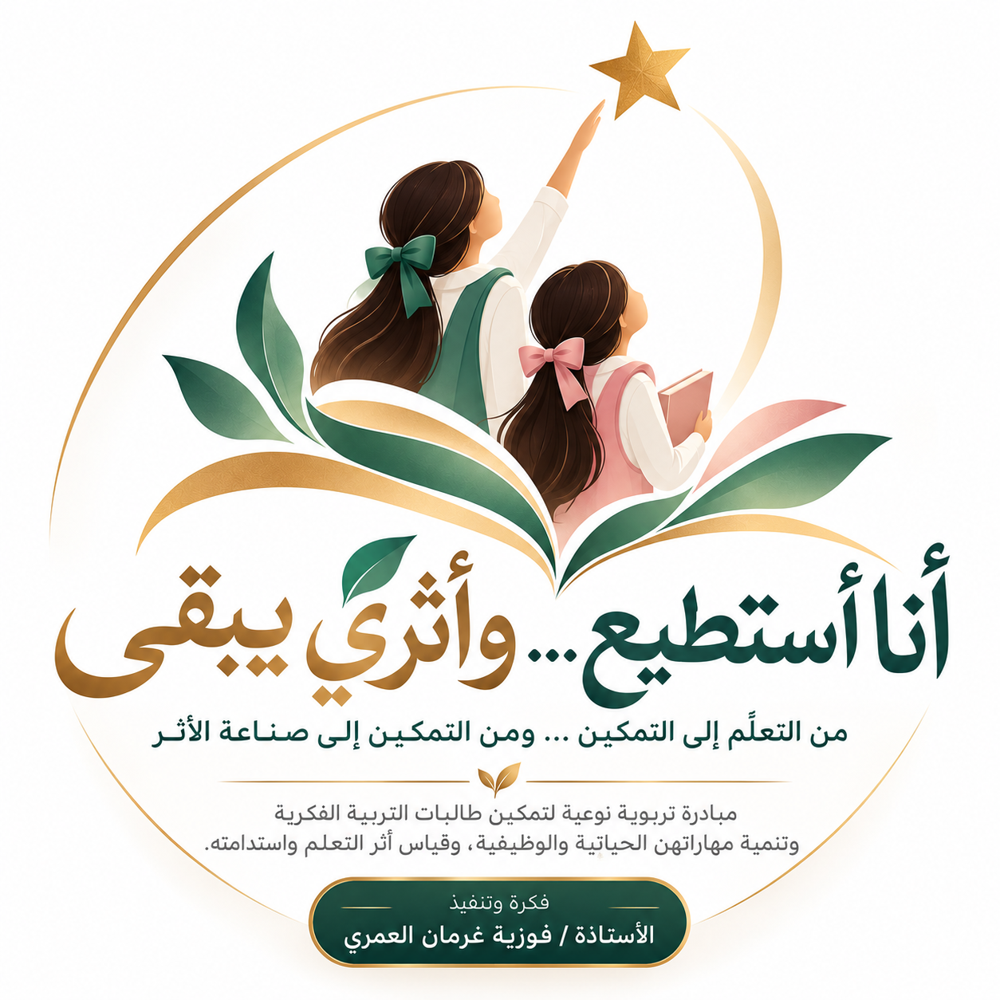

🌱
تعلّم ذو معنى
مهارات بسيطة وواقعية مرتبطة بحاجات الطالبة اليومية.
من التعلّم إلى التمكين… ومن التمكين إلى صناعة الأثر. رحلة تربوية لطالبتين من التربية الفكرية، تجعل المهارة الصغيرة بدايةً لاستقلال أكبر وأثرٍ يستمر.

مبادرة تربوية تركز على اكتشاف قدرات طالبتين من التربية الفكرية، وتنمية مهارات لغوية وحياتية وظيفية تتناسب مع إمكانات كل منهما، ثم نقل أثر التعلم من الصف إلى مواقف الحياة اليومية، وقياس استمراره.
مهارات بسيطة وواقعية مرتبطة بحاجات الطالبة اليومية.
فرص أداء حقيقية مع دعم يتناسب مع احتياج كل طالبة.
شواهد على التقدم وانتقال المهارة واستمرارها بمرور الوقت.
تُختار المهارات بعد التقييم القبلي، ولا تُفرض المهام نفسها على الطالبتين.
فهم كلمات وصور وتعليمات وظيفية والتعبير عن الاحتياجات بوسائل التواصل المناسبة.
تطبيق المهارات في ترتيب الأدوات أو إعداد وسيلة تعليمية أو أداء مهمة صفية مناسبة.
المساهمة في عمل مفيد وتكرار المهارة في المدرسة والمنزل مع متابعة استمرارها.
مدة أولية مقترحة: ثمانية أسابيع، قابلة للتعديل بناءً على التقييم الفردي وملاحظات المشرفة.
تقييم قبلي وتحديد المهارات ومستوى الدعم.
خطة تعليمية فردية وتدريب منظم.
نشاط تطبيقي أو منتج نافع بمشاركة فعلية.
مقارنة الأداء القبلي والبعدي وتوثيق الشواهد.
متابعة لاحقة بالتعاون مع الأسرة.
تلتقي الطالبتان في رسالة المبادرة، لكن لكل واحدة خطتها وأهدافها ومؤشرات نجاحها وفق مستوى الأداء الفعلي.
مسار فردي يُحدد بعد التقييم القبلي.
مسار فردي مستقل، لا يقارن بالطالبة الأولى.
حمايةً لخصوصية الطالبتين، لا يعرض الموقع أسماءهما أو صورهما أو تشخيصاتهما أو تقاريرهما الطبية. ولا تُنشر شواهد شخصية إلا بعد استكمال الموافقات اللازمة.
سجل فردي مصور يرافق كل طالبة، ولا يوثّق مجرد المشاركة، بل يبيّن مستوى الأداء، ونوع المساعدة، وما تحقق من تقدم، وما إذا استمرت المهارة وانتقلت إلى الحياة اليومية.
هذه مخرجات مستهدفة، وليست نتائج منجزة أو مثبتة حتى الآن.
«قد تكون الخطوة صغيرة في أعين الآخرين، لكنها في حياة الطالبة بداية استقلال، وبوابة مشاركة، وأثر يستحق أن يبقى».